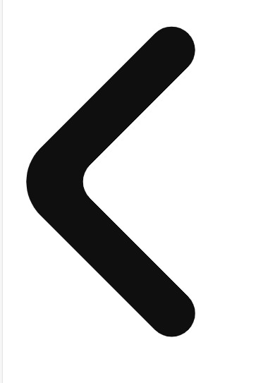

A Revolução Neuromórfica
O vídeo explora como a computação neuromórfica, inspirada no cérebro humano, está transformando a tecnologia. Ele destaca aplicações práticas, como diagnósticos médicos, inteligência artificial avançada e exploração espacial, mostrando o impacto dessa inovação no futuro.
Inspirado em Redes Neurais
